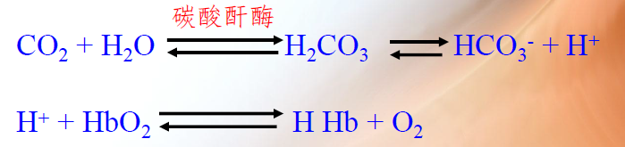
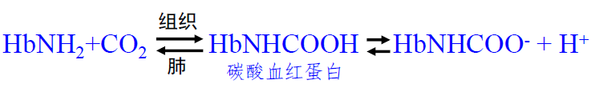
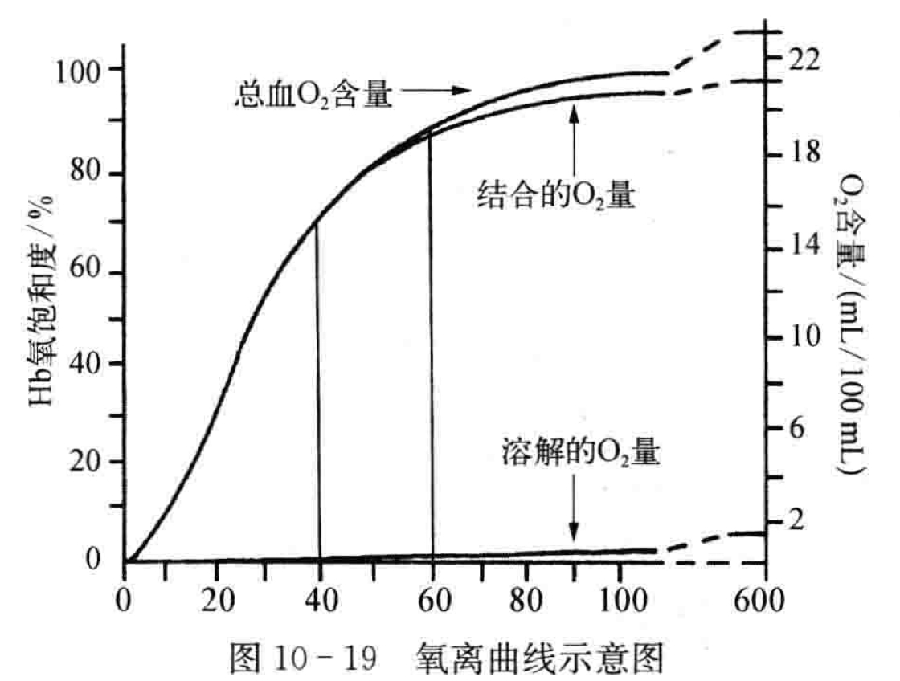
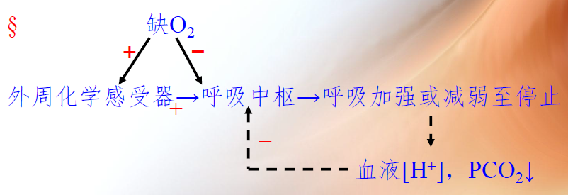

BME | Anatomy - Respiratory System
Respiratory System
Respiration: The process of gas exchange between the body and the external environment.
Respiratory Tract: Nose, Pharynx, Larynx, Trachea, Bronchi.
Lungs: Site for gas exchange.
External Respiration: Gas exchange between blood in the pulmonary capillaries and the external environment.
Internal Respiration: Gas exchange between blood in the tissue capillaries and the tissue cells.
Pulmonary Ventilation: Gas exchange between the lungs and the external environment.
Pulmonary Gas Exchange: Gas exchange between the lungs and blood in the pulmonary capillaries.
Gas Transport: Circulatory system transports from lungs to body tissues and cells, and transports from cells to lungs.
Nasal Vestibule: First barrier for filtering air.
Nasal Cavity: Divided into upper, middle, and lower turbinates. Olfactory region (upper turbinate), respiratory region (part excluding olfactory region, consists of epithelial cells, blood vessels, and glandular cells, moistens and purifies the air).
Paranasal Sinuses: Air-filled bony cavities around the nasal cavity.
Vocal Cords: Structures composed of vocal ligaments and vocalis muscles covering the vocal fold.
Mucous Barrier: Formed by secretions of goblet cells and tracheal glands.
Bronchioles: Terminal bronchioles - Respiratory bronchioles - Alveolar ducts/sacs - Alveoli.
Pulmonary Lobule: Smallest unit of lung tissue with its corresponding terminal bronchiole. Basic functional unit of the lung.
Functions of the Lungs: Gas exchange, conductive pathway.
Functional Vessels: Pulmonary arteries, veins, and their capillaries. For gas exchange.
Nutrient Vessels: Bronchial arteries, veins, and their capillaries. Supply oxygen and nutrients to various levels of bronchi.
Alveoli: Site of gas exchange. Single layer of epithelial cells, divided into Type I and Type II cells. Type I - gas exchange; Type II - produce surfactant, can transform into Type I cells.
Pleural Cavity: Enclosed space between the visceral and parietal pleurae.
Respiration
Pulmonary Ventilation: Process and Forms of Respiratory Movements
Processes:
- External Respiration (Blood - External Environment): Pulmonary Ventilation (Alveoli - External Environment) + Pulmonary Gas Exchange (Alveoli - Blood).
- Gas Transport (Tissues ←→ Lungs).
- Internal Respiration (Blood - Tissues).
Processes of Respiratory Movements:
Quiet Inhalation: Contraction of diaphragm and external intercostal muscles → increase in thoracic and lung volume → decrease in intra-alveolar pressure → air flows into the lungs.
Quiet Exhalation: Relaxation of diaphragm and external intercostal muscles → decrease in thoracic and lung volume → increase in intra-alveolar pressure → air flows out of the lungs.
Forced Inhalation: Contraction of diaphragm, external intercostal muscles, and accessory muscles → increase in thoracic and lung volume → decrease in intra-alveolar pressure → air flows into the lungs.
Forced Exhalation: Relaxation of diaphragm, external intercostal muscles, and contraction of expiratory muscles → decrease in thoracic and lung volume → increase in intra-alveolar pressure → air flows out of the lungs.
Forms of Respiratory Movements:
Abdominal and Thoracic Breathing: Respiratory movements primarily driven by diaphragmatic contraction and relaxation are called abdominal breathing. Respiratory movements primarily driven by external intercostal muscle contraction and relaxation are called thoracic breathing.
Quiet and Forced Breathing: Inhalation is active, while exhalation is passive. This type of respiratory movement is called quiet breathing.
Intrapulmonary Pressure, Pleural Cavity Negative Pressure
Changes in Intrapulmonary Pressure
Causes of Pleural Cavity Negative Pressure: Related to the natural volumes of the lung and the thoracic cavity. Development rate: Thoracic cavity > Lung; → Natural volume: Thoracic cavity > Lung. ∴ Pleural cavity pressure = Intrapulmonary pressure - Pulmonary recoil pressure. Max intrapulmonary pressure = atmospheric pressure; lungs remain in an expanded state and tend to recoil, ∴ Pleural cavity pressure remains negative.
Significance of Pleural Cavity Negative Pressure: 1) Facilitates lung expansion; 2) Promotes venous blood and lymphatic fluid return to the chest.
Pneumothorax: Rupture of chest wall/lung, creating a passage between the pleural cavity and the atmosphere, allowing air to immediately enter the negative pressure of the pleural cavity from the outside or alveoli. Resulting in: 1) Lungs no longer rhythmically expanding and contracting with the chest wall movements; 2) Decreased blood and lymphatic return.
Elastic Resistance, Non-Elastic Resistance
Respiratory resistance can be divided into Elastic Resistance and Non-Elastic Resistance.
Elastic Resistance: Elastic recoil force of chest wall and lung tissue.
Influencing Factors: Lung total capacity (increased capacity leads to increased compliance and decreased resistance), Pulmonary surfactant (reduces alveolar size, increasing resistance), Elastic fibers and collagen fibers in the lungs (increased tensile strength leads to increased recoil, making inhalation difficult and exhalation easy).
Non-Elastic Resistance Sources: Inertial resistance (resistance generated by varying airflow speeds), viscous resistance (friction generated by displacement), airway resistance (mainly).
Pulmonary Ventilation
Lung Capacity: Volume of air lungs can hold.
Lung Volumes: Maximum amount of air that can be inspired or expired in one breath.
Pulmonary Ventilation = Tidal Volume × Respiratory Rate: Total amount of air inhaled or exhaled per minute.
Alveolar Ventilation = (Tidal Volume - Anatomical Dead Space Volume) × Respiratory Rate: Amount of fresh air reaching alveoli per minute.
Dead Space: Includes anatomical dead space and alveolar dead space. Structural features in alveoli/airways cause some gas not to participate in gas exchange.
Pulmonary Gas Exchange and Transport
Driving Force: Partial pressure difference of gases.
Factors Influencing Exchange: 1) Thickness of the respiratory membrane (-), 2) Surface area of the respiratory membrane (+), 3) Ventilation/perfusion ratio (increase or decrease both impede gas exchange).
CO2 Transport Methods: Bicarbonate ions (majority) and Carbaminohemoglobin (minority - does not require an enzyme).


Respiration and Oxygen
Oxygen Dissociation Curve and Its Influencing Factors
Concept: Represents the relationship between and oxygen saturation. Reflects the binding and dissociation of oxygen to hemoglobin at different levels.
Upper Part (Right) of the Oxygen Dissociation Curve: Comparatively flat.
Middle Part of the Oxygen Dissociation Curve: Steeper, reflects the release of from .
Lower Part (Left) of the Oxygen Dissociation Curve: Reflects dissociation of and .

Influencing Factors:
Effects of pH and : pH↓, ↑: → Decreased affinity of hemoglobin for oxygen, rightward shift in the dissociation curve.
Temperature: Increased temperature: rightward shift in the dissociation curve, facilitates oxygen release.
2,3-Diphosphoglycerate (2,3-DPG): ↑, decreased affinity of Hb for O2, rightward shift in the dissociation curve.
Respiratory Center
Location of the Respiratory Center: Distributed in various parts including the cerebral cortex, diencephalon, brainstem (pons, medulla), and spinal cord.
Spinal Cord - Controls respiratory muscles; Brainstem and Medulla - Sites for generating basic respiratory rhythm; Pons - Respiratory adjustment center; Medulla - Center for basic respiratory rhythm.
Peripheral and Central Chemoreceptor Reflex Mechanisms, Concept of Pulmonary Stretch Reflex
Peripheral Chemoreceptor Sensitivity (Stimuli: ↓ ↑ ↑)
Central Chemoreceptors (Located superficially in the ventral surface of the medulla, sensitive to increased in cerebrospinal fluid. passes through the blood-brain barrier leading to an increase in .)
Pulmonary Stretch Reflex: Inhibition or excitation of inspiration caused by lung expansion or collapse. Includes lung inflation and lung deflation reflexes.
Lung Inflation Reflex: Inhibition of inspiratory activity during lung expansion. Lung expansion → stretch receptors in smooth muscles → vagus nerve → medulla.
Lung Deflation Reflex: Enhancement of inspiratory activity during lung collapse.
Influence of CO2, Hypoxia, H+ on Respiratory Movements
CO2: Most significant regulatory factor. Two pathways. Central pathway - primary.
H+: Two pathways. Peripheral pathway - primary.
O2: Entirely through peripheral chemoreceptors.

| Influencing Factor | Effect on Respiration |
|---|---|
| CO2↑ | Enhanced, then inhibited |
| H+↑ | Enhanced |
| O2 | Enhanced, then inhibited |
“Most”
Thyroid Cartilage: Largest piece in the laryngeal cartilage.
Cricoid Cartilage: The only ring-shaped cartilage in the laryngeal cartilage.
Pre-Epiglottic Recess: The smallest volume among the three parts of the laryngeal cavity.
Glottis: The narrowest part of the laryngeal cavity.
Subcostal Recess: Lowest part of the pleural cavity.
Note: The content in this blog is class notes shared for educational purposes only. Some images and content are sourced from textbooks, teacher materials, and the internet. If there is any infringement, please contact aursus.blog@gmail.com for removal.